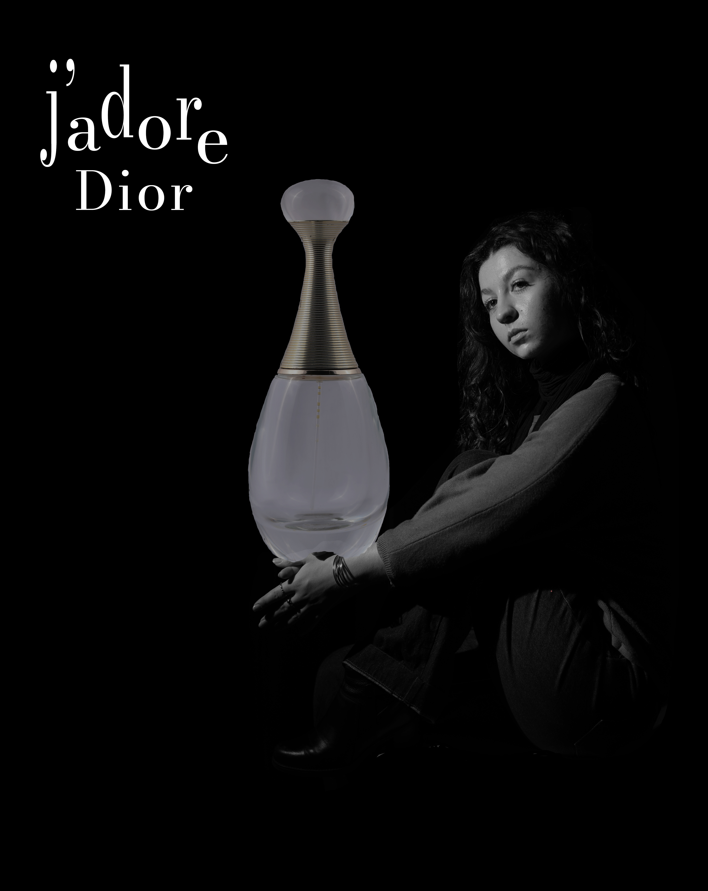
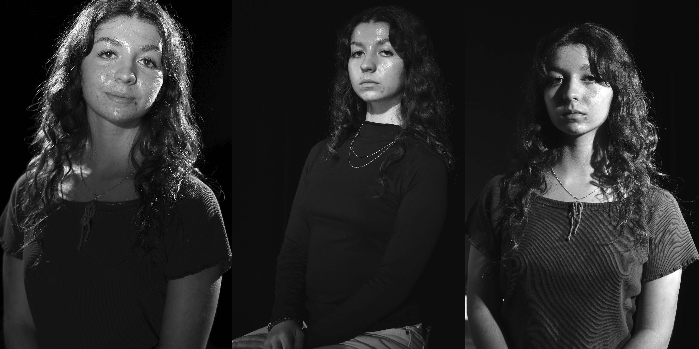

PUBLICITÉ
Pour ce projet, j'ai pris l'initiative de m'inspirer de la pub mythique de Vanessa Paradis pour Chanel afin de réinventer une publicité de parfum, en gérant seule toute la direction artistique. Le montage sur Photoshop m'a permis de développer mes compétences en info-com, notamment en apprenant à construire une identité visuelle forte et à maîtriser les techniques d'incrustation pour obtenir un rendu pro.
3 ÉCLAIRAGES
Pour ce projet, j'ai expérimenté différentes techniques de lumière en studio — notamment le clair-obscur, l'éclairage de biais et de face — afin de montrer comment l'exposition change radicalement l'expression d'un portrait. L'assemblage final sur Photoshop m'a permis de valider des compétences en info-com, comme la gestion technique de la post-production et la compréhension de la sémiologie de l'image à travers le travail des ombres.
Actuellement étudiante en première année de BUT Information-Communication, parcours Information Numérique dans les Organisations, je m’oriente vers les métiers de la communication.
Depuis plusieurs années, je m’intéresse à différents domaines tels que la communication digitale, les réseaux sociaux, l’événementiel ou encore la publicité. Cette envie s’est confirmée lors de mon service civique, où j’ai pu participer à des actions concrètes et développer une première expérience dans ce secteur.
Aujourd’hui, mon projet professionnel s’inscrit dans une démarche d’exploration et de construction progressive. Plutôt que de me limiter à un métier précis, je souhaite découvrir les différentes facettes de la communication afin d’identifier le domaine dans lequel je pourrai m’épanouir pleinement.
Motivée, créative et organisée, mon objectif est de développer mes compétences et de m’insérer dans un environnement professionnel dynamique, notamment dans les domaines de la communication digitale ou événementielle.